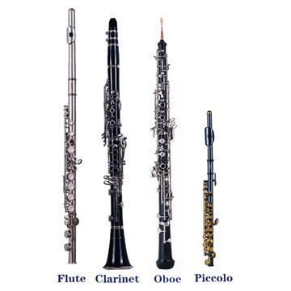
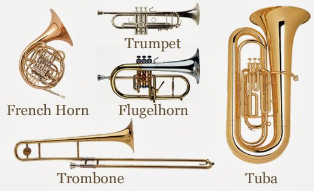
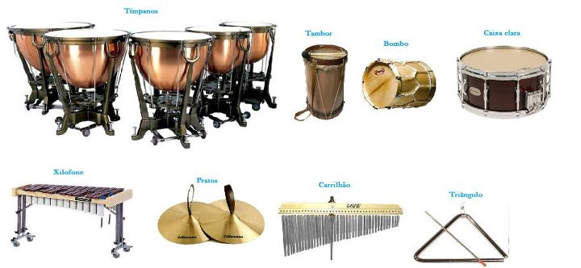

樂器分類

木管
關於木管樂器的介紹。

銅管
關於銅管樂器的介紹。

打擊
關於打擊樂器的介紹。
關於此網站
本網站想讓大家能更認識各種管樂器。管樂器是一個包含多種樂器的大家族，主要分為銅管樂器和木管樂器兩大類。
銅管樂器如小號、長號、法國號和低音號，通常由黃銅製成，音色明亮且響亮，主要依靠唇部震動產生聲音。
木管樂器如長笛、單簧管、雙簧管和薩克斯風，通常由木材或金屬製成，通過吹氣並使用指孔或按鍵調節音高。
這些樂器在交響樂團、室內樂、爵士樂和流行音樂中均有廣泛應用。
它們各具特色，能夠表現出豐富的音樂情感和多樣的音色，為音樂作品增添了色彩和層次。